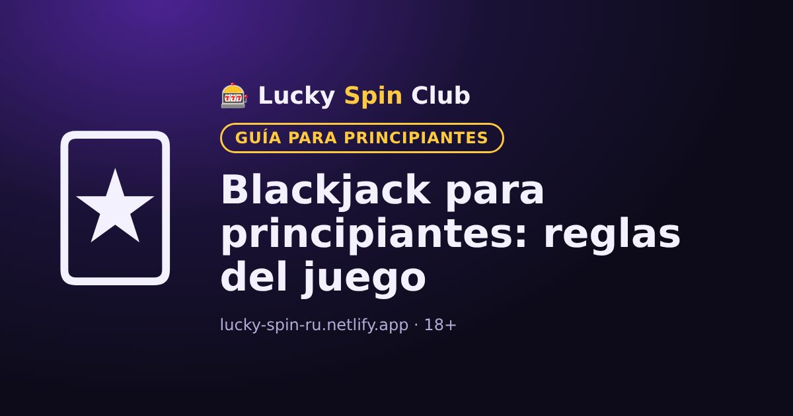

Blackjack para principiantes: reglas del juego

Actualizado: 6 de noviembre de 2026
El blackjack es un juego de cartas contra el crupier. Es uno de los pocos juegos de casino en los que las decisiones del jugador influyen en el resultado.
Objetivo del juego
Sumar más puntos que el crupier sin pasar de 21. Si superas 21, te pasas y pierdes la apuesta.
Valor de las cartas
- Del 2 al 10: su valor nominal.
- J, Q y K: 10 puntos.
- As: 1 u 11, lo que más convenga.
Blackjack es un as y una carta de 10 puntos con las dos primeras cartas. Normalmente se paga 3:2: con una apuesta de 10 $ recibes 15 $ de ganancia.
Decisiones del jugador
- Pedir (Hit): recibir otra carta.
- Plantarse (Stand): no pedir más cartas.
- Doblar (Double): duplicar la apuesta y recibir exactamente una carta más.
- Dividir (Split): si tus dos cartas son iguales, separarlas en dos manos.
Cómo juega el crupier
El crupier sigue reglas fijas: normalmente pide carta hasta llegar a 17 y luego se planta. No toma decisiones propias.
Estrategia básica
Existen tablas de estrategia básica que muestran la mejor decisión para cada combinación de tus cartas y la carta visible del crupier. Reducen la ventaja del casino, pero no la eliminan. Puedes practicarlas sin riesgo en el modo demo.
¿Quieres probar? El registro toma alrededor de un minuto.
🎁 Registrarse y obtener el bonoPreguntas frecuentes
¿Cuánto vale el as en el blackjack?
El as vale 1 u 11 puntos, según lo que más convenga a la mano.
¿Qué es un blackjack?
Es un as y una carta de 10 puntos con las dos primeras cartas. Normalmente se paga 3:2.
¿Sirve la estrategia básica?
Sí: ayuda a tomar las decisiones óptimas y reduce la ventaja del casino, pero no la elimina por completo.